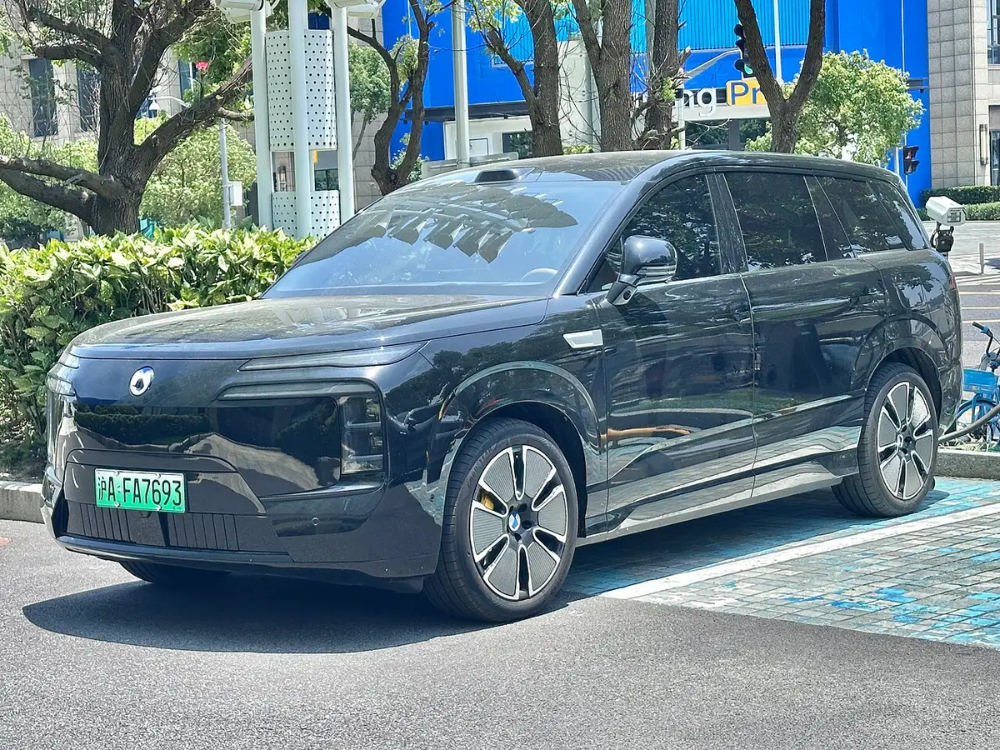
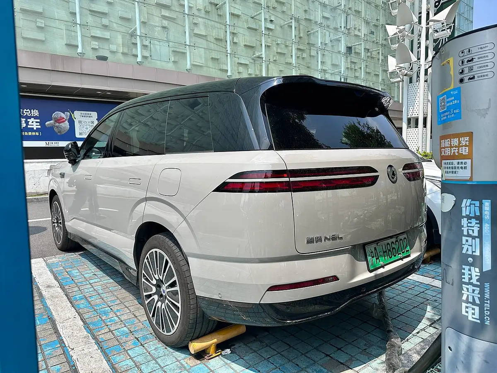
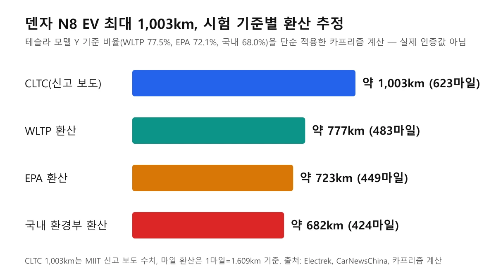
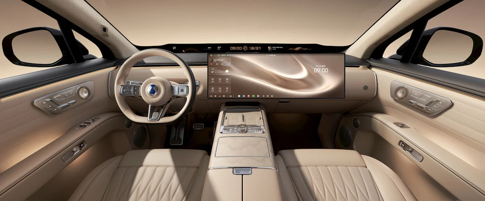
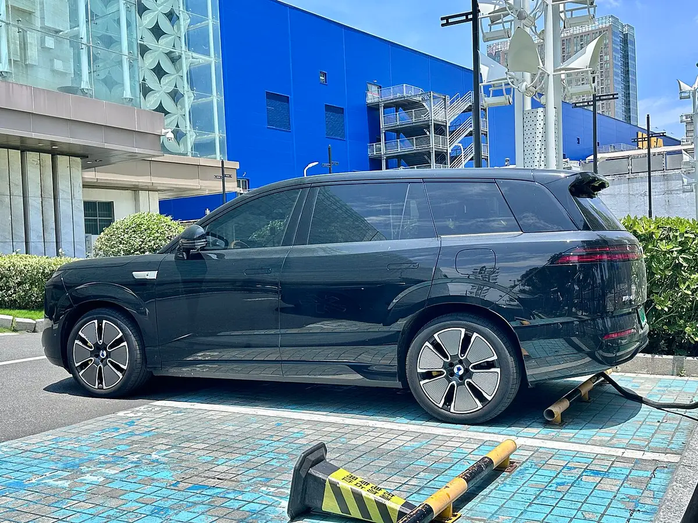
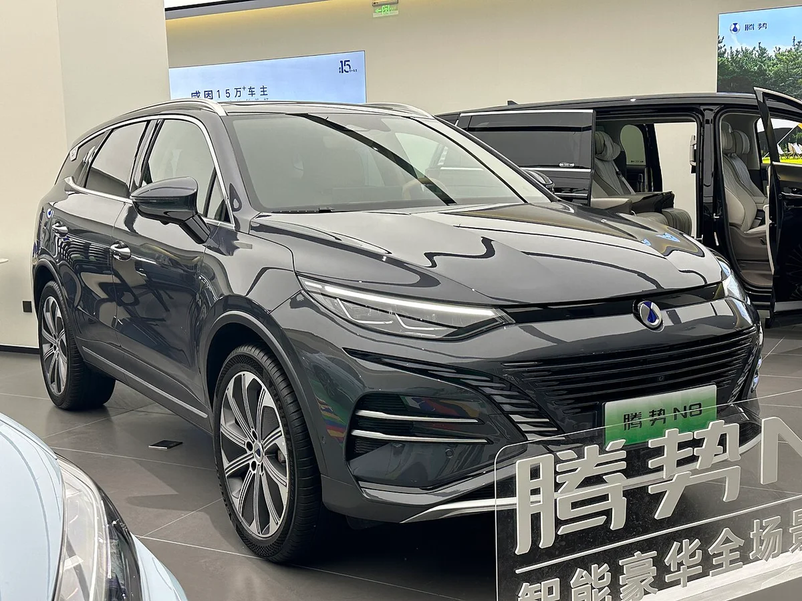
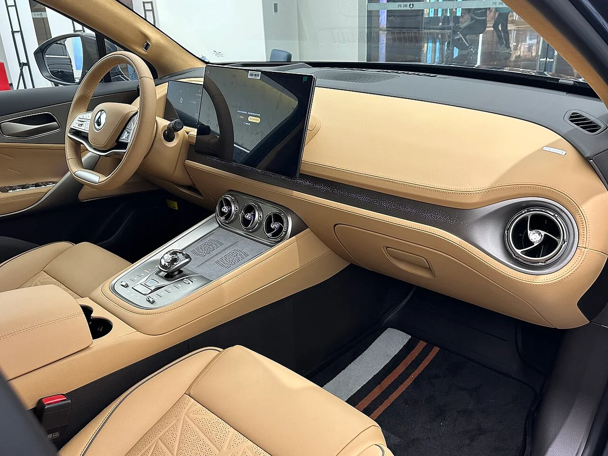

▲ 도로에서 촬영된 덴자 N8L 전측면. 이번 N8 EV의 6인승 형제 모델(휠베이스 동일)이며 N8 EV 사진이 아니다 ⓒ JustAnotherCarDesigner, Wikimedia Commons (CC0)
"1회 충전 623마일"이라는 BYD의 새 럭셔리 전기 SUV, 도대체 어떤 차이고 그 숫자는 어느 나라 기준일까? 일렉트렉(Electrek)이 2026년 10월 21일 보도한 이 차는 BYD 고급 브랜드 덴자(Denza)의 N8 EV다. 양왕 U8L 같은 다른 BYD 럭셔리 SUV를 떠올린 독자가 많을 텐데, 이 글은 차 이름과 623마일의 시험 기준부터 가린다.
먼저 결론이다. 623마일은 1,003km를 마일로 바꾼 값이고, 1,003km는 중국 CLTC 기준이다. 미국 EPA나 한국 환경부 기준이 아니라는 뜻이다. 아래에서 기준별 환산 추정치와 확인하지 못한 것을 나눠 적는다.
1. 양왕 U8L일까 덴자 N9일까: 623마일의 주인공은 덴자 N8 EV
일렉트렉은 이 차를 "덴자 N8 EV"로 소개했고, 양왕이나 N9이 아니라 덴자 브랜드의 5인승 대형 전기 SUV다. 2023년 8월 나온 1세대 N8은 플러그인 하이브리드(DM-p)였고, 2026년 7월 재공개된 2세대에 순수전기 사양이 붙는다는 것이 보도의 골자다. 위키피디아 N8 항목도 이번 N8을 N8L보다 작은 5인승 버전으로 적고 있다.
카프리즘이 이미 다룬 양왕 U8L은 엔진을 단 레인지 익스텐더 SUV라 이번 차와 다른 라인이다. 그 차의 구성은 양왕 U8L 기사에, 같은 날 보도된 3세대 탕 EV는 BYD 5인승 전기 SUV 기사에 정리했다. 이 글은 그 차들과 달리 주행거리 숫자의 기준 차이에만 집중한다.

▲ 덴자 N8L 전면. 6인승 N8L과 5인승 N8 EV는 길이만 50mm 다르고 폭·높이·휠베이스는 같다(MIIT 신고 보도) ⓒ Popr, Wikimedia Commons (CC0)
| 항목 | 내용 | 근거 |
|---|---|---|
| 차체 크기 | 5,150 × 1,999 × 1,820mm, 휠베이스 3,075mm | MIIT 신고(카뉴스차이나·일렉트렉) |
| 좌석 | 5인승 | 일렉트렉 |
| 배터리 | 2세대 블레이드(LFP) 130.15kWh 또는 105.792kWh | MIIT 신고(카뉴스차이나) |
| 구동 | 후륜 단일 모터 320kW 또는 370kW, 삼중 모터 AWD 합산 890kW(약 1,193마력) | MIIT 신고(카뉴스차이나) |
| 실내 화면 | 30인치 중앙 화면, 43인치 파노라마 HUD | 일렉트렉 보도 |
같은 N8이라도 모터와 배터리 조합이 여러 가지로 신고돼 있어, 아래의 주행거리 숫자도 하나가 아니라 네 개가 나온다.
2. 623마일은 얼마인가: 1,003km를 1.609로 나눈 값일 뿐
1,003km를 1.609로 나누면 약 623.2마일이고, 일렉트렉도 본문에서 "CLTC 기준 최대 623마일(1,003km)"이라고 시험 기준을 밝혔다. 일렉트렉 기사에는 EPA 언급이 없다. 제목의 623마일만 보면 미국에서 인증받은 수치처럼 읽히기 쉬운 이유다.
CLTC(China Light-duty Vehicle Test Cycle)는 중국 도심의 저속·정체 환경을 반영한 시험이라 전기차에 후하게 나온다. 같은 차의 숫자가 인증마다 어떻게 달라지는지는 전기차 주행거리 인증 기준 비교 기사에서 모델 Y 사례로 다뤘다. 그 기사 기준으로 CLTC는 WLTP·EPA·국내 환경부보다 항상 먼저 나오는 큰 숫자다.
3. 1,003·970·840·800km: 신고 목록에는 숫자가 네 개 있다
카뉴스차이나가 8월 13일 보도한 MIIT 신고 목록에는 N8 순수전기의 주행거리가 1,003km, 970km, 840km, 800km 네 가지로 올라 있고, 1,003km가 최대치다. 같은 매체는 배터리를 130.15kWh와 105.792kWh 두 가지로 적었지만, 어느 주행거리가 어느 배터리·구동에 붙는지는 밝히지 않았다.
카뉴스차이나 원문은 N8 수치의 시험 기준을 따로 적지 않았고, CLTC라는 표기는 일렉트렉과 중국 매체(오토홈 차가하오 2026년 10월 22일자)에 근거한다. 이 오토홈 게재글도 가격은 "미공개"이고 출시일을 적지 않았으며, 삼중 모터 사양 합산 890kW와 최고 시속 240km를 신고 수치로 전한다.
그래서 "N8 EV는 1,003km"라고 쓰면 반만 맞다. 일부 매체는 130kWh 배터리에 370kW 후륜 단일 모터 조합이 1,003km라고 쓰고 다른 매체는 삼중 모터 사양을 840km로 적는데, 신고 원문을 직접 대조하지 못해 카프리즘은 조합을 특정하지 않는다.
| 모델 | CLTC 주행거리 | 배터리 | 확인 수준 |
|---|---|---|---|
| N8 EV(5인승) | 1,003 / 970 / 840 / 800km 중 최대 1,003km | 130.15kWh 또는 105.792kWh | MIIT 신고 보도, 조합 미특정 |
| N8L EV(6인승) | 최대 960km | 130.15~130.2kWh | 9월 14일 출시, 중국 매체 보도 |
N8L은 이미 판매 중인 차라 960km가 출시 시점 공개 수치이고, N8 EV의 1,003km는 아직 신고 단계라는 점이 두 숫자의 신뢰도를 가른다.

▲ 덴자 N8L 후측면. 5인승 N8 EV와 같은 계열 차체다 ⓒ JustAnotherCarDesigner, Wikimedia Commons (CC0)
4. EPA로 바꾸면 몇 마일일까: 카프리즘 환산표
모델 Y에서 확인된 비율을 단순 적용하면 1,003km는 WLTP 약 777km, EPA 약 723km(449마일), 국내 환경부 약 682km 수준이다. 이 값은 인증값이 아니라 카프리즘이 계산한 참고치이며, 차종마다 비율은 다르다.

▲ 시험 기준별 환산 추정(카프리즘 직접 제작 도표) ⓒ 카프리즘
| 기준 | 모델 Y 비율(CLTC 688km 대비) | 1,003km 적용 | 마일 |
|---|---|---|---|
| CLTC(중국) | 100%(688km) | 1,003km | 623마일 |
| WLTP(유럽) | 77.5%(533km) | 약 777km | 약 483마일 |
| EPA(미국) | 72.1%(496km) | 약 723km | 약 449마일 |
| 환경부(한국) | 68.0%(468km) | 약 682km | 약 424마일 |
비율이 이렇게 갈리는 이유는 CLTC가 저속 비중이 크고 국내 인증이 EPA 방식에 급가속·냉난방·저온 보정을 더하기 때문이다.
카프리즘 시선
N8L과 N8 EV는 배터리 용량이 130.15kWh로 같은데 CLTC 수치는 960km와 1,003km로 43km(약 4.5%) 다르다. 배터리가 같다면 이 차이는 용량이 아니라 차체 크기(N8L 5,200mm, N8 5,150mm)와 구동 조합 같은 다른 요인에서 나왔다고 보는 편이 합리적이다. 같은 이름 계열 안에서도 주행거리 수치가 트림마다 달라지는 만큼, 숫자 하나만 따로 떼어 비교하기는 어렵다.
또 623마일을 EPA로 환산하면 약 449마일이 되어 약 174마일(28%)이 줄어든다. 제목 숫자가 크게 느껴지는 이유 중 상당 부분은 차의 성능보다 시험 기준에서 나온다.
단위 환산과 비율 계산은 카프리즘이 직접 했고, 실제 N8 EV의 WLTP·EPA·환경부 인증값은 아직 공개되지 않았다.
5. 130kWh에 1,003km면 전비는: 계산하면 100km당 약 13kWh
130.15kWh를 1,003km로 나누면 CLTC 기준 전비는 100km당 약 12.98kWh이고, N8L(960km)은 약 13.56kWh다. 배터리 용량을 시험 거리로 단순히 나눈 값이라 충전 손실은 빠져 있고 실제 소비 전력과 다르다.
충전은 BYD가 내세우는 플래시 충전(Flash Charging)이 적용된다는 보도다. 일렉트렉은 1,500kW 충전으로 10→70%가 약 5분, 10→97%가 약 9분이라고 전했다. 이 시간은 BYD 전용 초급속 충전기를 전제로 하며 일반 급속충전기에서는 나오지 않는다. 충전소 현황은 BYD 초급속 충전소 1만 개 기사에서 정리했다.

▲ 덴자 N8 실내. 일렉트렉이 "출처: Denza"로 표기한 제조사 이미지다 ⓒ Denza (제조사 공개 이미지, 일렉트렉 게재본), 사용자 책임 하 게재
▲ 덴자 N8L EV(6인승). 일렉트렉이 "출처: BYD"로 표기한 이미지로, 이번 N8 EV가 아닌 형제 모델이다 ⓒ BYD (제조사 공개 이미지, 일렉트렉 게재본), 사용자 책임 하 게재

▲ 덴자 N8L 측면. 휠베이스는 N8L·N8 EV 모두 3,075mm로 신고돼 있다 ⓒ Popr, Wikimedia Commons (CC0)
6. 아쉬운 점과 주의할 점: 신고 단계 숫자라는 한계
가장 큰 주의점은 1,003km가 판매 사양이 확정된 공식 발표가 아니라 신고 목록 보도라는 것이다. MIIT 신고 후 실제 출시 때 사양과 수치가 달라지는 사례는 흔하다.
- 조합 불명: 어느 배터리·모터 조합이 1,003km인지 공개 자료로 특정되지 않았다
- 출시일은 예상: 일렉트렉은 "현지 매체가 10월 26일 출시를 예상한다"고 썼고, 덴자 공식 발표는 확인하지 못했다
- 가격 미공개: N8 EV 가격은 나오지 않았다. 참고로 N8L EV는 299,800~329,800위안(약 4만5천~4만9천 달러, 일렉트렉 환산)이다
- 무게·효율 영향: 130kWh급 배터리는 차체를 무겁게 하고, 고속·겨울 주행에서 숫자가 CLTC보다 크게 줄 수 있다
- 충전 수치: 5분·9분은 BYD 전용 충전기 기준이고 한국에는 이 충전망이 없다

▲ 1세대 덴자 N8(PHEV, 2024년 촬영). 이번 신형 N8 EV와 외관이 다르다 ⓒ JustAnotherCarDesigner, Wikimedia Commons (CC0)
7. 가격·출시·한국 판매: 확인된 것과 확인하지 못한 것
확인된 것은 N8L EV가 9월 14일 중국에서 출시됐다는 점이고, N8 EV의 공식 출시일·가격·한국 판매 계획은 확인하지 못했다. N8L EV는 중국 매체 보도 기준 2개 트림에 299,800~329,800위안, CLTC 최대 960km, 370kW 후륜 모터, 최고 시속 240km다.
한국 판매는 BYD코리아 공식 발표를 찾지 못했다. 한국 BYD 라인업은 BYD코리아 2026 라인업 기사에 정리돼 있고, 덴자 브랜드 도입 계획은 거기에도 없다. 참고로 류쉐량 BYD 아태지역 총괄 부총재는 2026년 6월 부산모빌리티쇼 간담회에서 "시기와 시장 여건이 성숙해진다면 양왕 도입을 긍정적으로 검토하겠다"면서도 "현재 구체적인 출시 계획은 없다"고 말했다(OSEN 보도). 이 발언에 덴자는 언급되지 않았다.
확인하려면 BYD 공식 글로벌 사이트에서 신차 발표 자료를 확인할 수 있다. BYD 글로벌 사이트 바로가기

▲ 1세대 덴자 N8(PHEV) 실내. 신형 EV와 대시보드 구성이 다르다 ⓒ JustAnotherCarDesigner, Wikimedia Commons (CC0)
8. 이 글이 확인하지 못한 것
- MIIT 신고 원문: 카뉴스차이나 등 보도만 확인했고 원문 공시를 직접 대조하지 못했다
- 1,003km의 배터리·구동 조합: 매체마다 설명이 엇갈린다
- 덴자·BYD 공식 N8 EV 발표: 출시일(10월 26일)·가격·공식 CLTC 수치 모두 미확인
- WLTP·EPA·환경부 인증값: 공개된 것이 없어 본문 환산은 카프리즘 추정
- 한국 판매 계획: BYD코리아 공식 확인 불가
9. 요약
"623마일" BYD 럭셔리 전기 SUV는 덴자 N8 EV이며, 623마일은 중국 CLTC 최대 1,003km를 환산한 값이다. 신고 목록에는 1,003·970·840·800km 네 가지가 올라 있고, 어느 조합이 최대치인지는 확인되지 않았다.
모델 Y 비율을 적용한 카프리즘 계산으로는 EPA 약 449마일, 국내 환경부 약 682km 수준이다. 출시일(10월 26일)은 중국 현지 매체 예상, 가격과 한국 판매 계획은 확인하지 못했다.